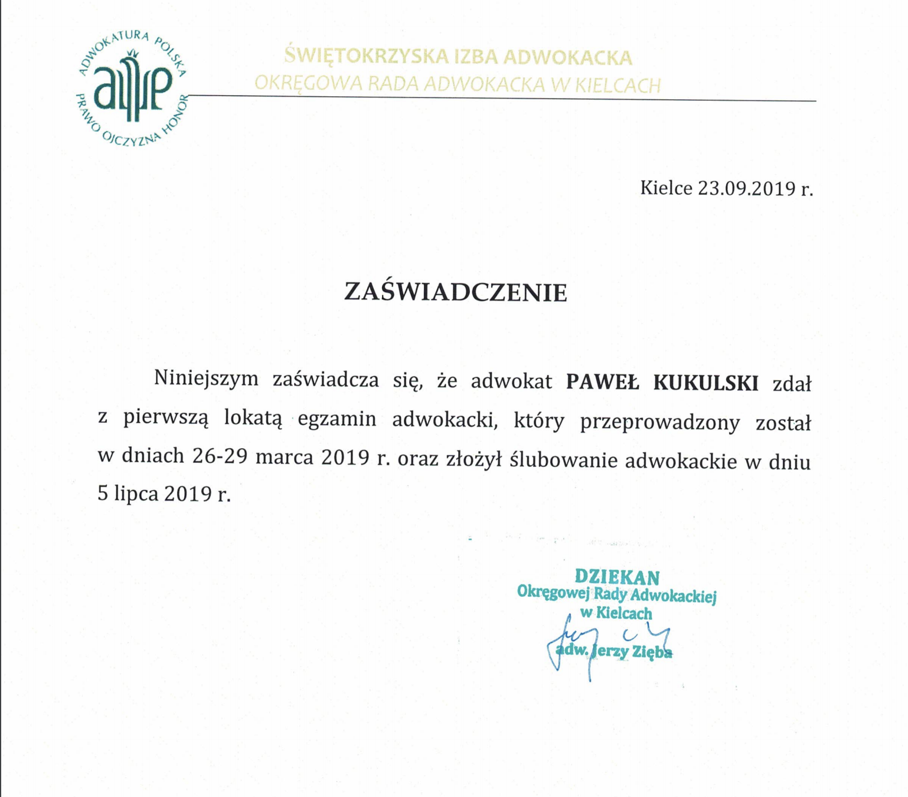
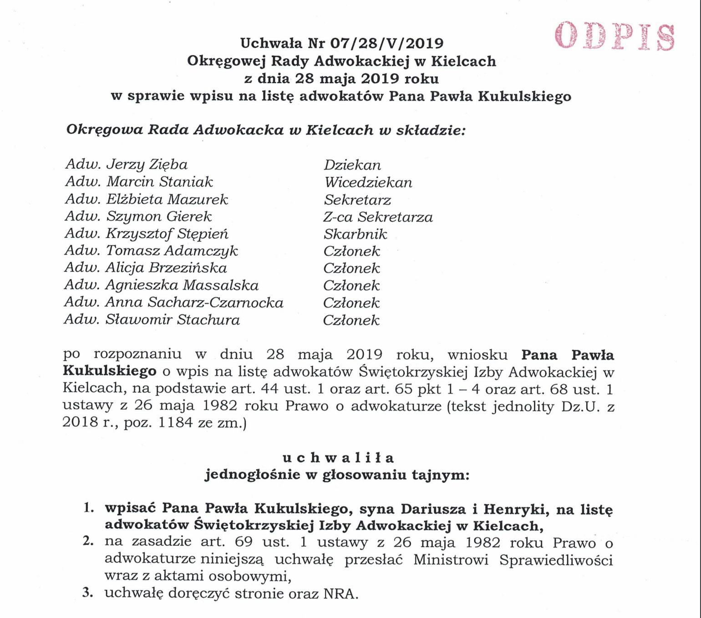

O mnie
W 2015 r. ukończyłem studia magisterskie na kierunku Prawo z wynikiem bardzo dobrym, uzyskując tym samym tytuł zawodowy magistra prawa, broniąc pracy magisterskiej po seminarium z prawa karnego pod tytułem „Kara ograniczenia wolności w polskim prawie karnym”. W tym samym roku przystąpiłem również do egzaminu wstępnego na aplikację adwokacką, który złożyłem z pozytywnym wynikiem. Z początkiem roku 2016 rozpocząłem odbywanie aplikacji adwokackiej przy Świętokrzyskiej Izbie Adwokackiej w Kielcach. W tym czasie odbywałem praktyki w sądach i prokuraturach, a także w jednej z uznanych kancelarii kieleckich. Aplikację adwokacką ukończyłem w roku 2018, zaliczając wszystkie egzaminy i kolokwia w ustawowym terminie z bardzo dobrymi wynikami. Od roku 2015 do roku 2017 r. pracowałem w Sądzie Rejonowym w Kielcach zdobywając cenne doświadczenie w zakresie funkcjonowania instytucji wymiaru sprawiedliwości, biurowości sądowej oraz praktyki działania w zawodzie czynnego prawnika. Uzyskując stosowne uprawnienie związane z odbyciem aplikacji adwokackiej, przystąpiłem do zawodowego egzaminu adwokackiego w roku 2019, który złożyłem z wynikiem pozytywnym, uzyskując najlepszy wówczas wynik w Świętokrzyskiej Izbie Adwokackiej w Kielcach wśród wszystkich zdających. Uchwałą Okręgowej Rady Adwokackiej w Kielcach z dnia 28 maja 2019 r. zostałem wpisany na listę adwokatów Świętokrzyskiej Izby Adwokackiej w Kielcach. W dniu 5 lipca 2019 r. złożyłem ślubowanie adwokackie i od tego momentu uzyskałem uprawnienie do używania tytułu zawodowego adwokata. Swoją praktykę jako czynny prawnik rozpocząłem w dniu 9 grudnia 2019 r. zakładając swoją kancelarię adwokacką.
Dokumenty
-

-

Zakres usług
W ramach prowadzonej przez mnie działalności gospodarczej w formie Kancelarii Adwokackiej oferuję obsługę prawną dla osób fizycznych oraz podmiotów gospodarczych. Swoje usługi świadczę na obszarze właściwości Świętokrzyskiej Izby Adwokackiej, a ponadto na terenie całego kraju.
Służę pomocą prawną w zakresie udzielanych porad prawnych, reprezentacji klienta przed sądami i urzędami, a także w procesie polubownego załatwiania sporów. Ponadto pośredniczę przy zawieraniu umów z kontrahentami, a także sporządzam projekty umów oraz analizuję przedstawione przez Państwa projekty umów lub też umowy już zawarte.
W ramach pomocy prawnej świadczonej dla osób fizycznych, oferuję usługi w zakresie wszystkich powszechnych dziedzin prawa, z którymi przychodzi zmierzyć się w codziennej praktyce. Należy tutaj wymienić m.in. problemy związane z:
- prawem karnym, karnym skarbowym, wykroczeniowym
– obejmujące postępowanie w fazie przygotowawczej, udział w rozprawach głównych i posiedzeniach, stała obrona w sprawach karnych, postępowanie odwoławcze i kasacyjne oraz postępowanie wykonawcze. W ramach świadczonych usług z tej kategorii świadczę również usługi w zakresie wznowienia postępowania,
a także odszkodowania za niesłuszne skazanie lub niesłuszne tymczasowe aresztowanie. Dodatkowo oferuję pomoc osobom pokrzywdzonym przestępstwem, reprezentując ich interesy jako pełnomocnik w toczącym się procesie, w tym jako oskarżyciel posiłkowy czy prywatny.
- prawem cywilnym, rodzinnym i opiekuńczym, spadkowym, rzeczowym – obejmujące postępowanie przedsądowe (mediacja, polubowne załatwianie sposób, przedsądowa windykacja należności), ale również postępowania w zasadniczej fazie przez sądami powszechnymi. W ramach tej dziedziny zajmuje się wszelkimi sprawami, stanowiącymi najczęstsze postępowania z
udziałem osób fizycznych i prawnych, jak np. sprawy o zapłatę, o alimenty, o pozbawienie i ograniczenie władzy rodzicielskiej, o ustalenie kontaktów z dzieckiem, o rozwód, o podział majątku wspólnego, o ochronę dóbr osobistych, o odszkodowanie i zadośćuczynienie, o stwierdzenie nabycia spadku i o dział spadku, o zachowek oraz sprawy dot. testamentów, sprawy o zniesienie współwłasności, o naruszenie własności i posiadania, o eksmisję, o zasiedzenie i rozgraniczenie, a także sprawy wieczystoksięgowe. Oferuję reprezentację klienta przed sądami I oraz II instancji, a także przed Sądem Najwyższym na skutek sporządzenia i wniesienia skargi kasacyjnej oraz reprezentację na etapie postępowania egzekucyjnego. W ramach tej dziedziny oferuję również szeroko pojętą pomoc i wsparcie dla konsumentów w sporach z przedsiębiorcami wynikającymi z przysługującymi im uprawnieniami konsumenckimi.
- prawem administracyjnym – reprezentowanie osób przed organami administracji publicznej w sprawach odwołań od decyzji organów I instancji i skarg na decyzje organów II instancji do wojewódzkich sądów administracyjnych, wraz z postępowaniem kasacyjnym. Dotyczy to w szczególności sporządzania na tych etapach pism procesowych (odwołanie, skarga, wnioski dowodowe, zastrzeżenia, zarzuty) oraz reprezentacja przed sądami i organami na mocy udzielonego pełnomocnictwa.
- prawem pracy – reprezentowanie pracowników w sporach z pracodawcami i zakładem pracy, co dotyczy głównie spraw o wydanie świadectwa pracy, o zapłatę zaległego wynagrodzenie, o odszkodowanie za niesłuszne wypowiedzenie stosunku pracy względnie o przywrócenie do pracy i uznanie wypowiedzenia za bezskuteczne, a także powództwa o mobbing czy o nawiązanie stosunku pracy.
Ponadto zajmuje się obsługą podmiotów gospodarczych, w ramach której oferuję przygotowywanie i opracowywanie projektów umów zawieranych pomiędzy przedsiębiorcami, bieżącą obsługę prawną (w tym sporządzanie pism procesowych, składanie ich w sądach i urzędach, występowanie przed sądami i urzędami, obsługa postępowania egzekucyjnego), jak również sporządzanie szczegółowych i fachowych opinii prawnych. Ponadto, oferuję reprezentację podmiotów w postępowaniach przed Sądem Rejestrowym w ramach postępowania rejestrowego (w tym wpisy do Krajowego Rejestru Sądowego oraz innych rejestrów publicznych).